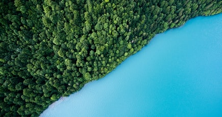

These long-lived woody plants have benefits for the entire planet
Trees have been around for some 370 million years. These long-lived woody plants can be found on every continent except Antarctica. Scientists have identified more than 60,000 tree species. And they’ve estimated that there are 3.04 trillion individual trees growing across the globe.
Trees provide homes for animals and shade for people on hot days. One of their big benefits is that they soak up and store the greenhouse gas carbon dioxide. Some people have suggested that planting trees could help to negate the impact of global warming. Researchers last year, though, warned that the easy and simple idea wasn’t so easy and simple after all. It would be difficult to plant enough trees. However, planting trees could help — if done thoughtfully, and in the right places.
Many fossils, or traces of ancient life, look like dull rocks. That’s because they’re typically made of minerals that gradually replaced the structure of the ancient organism. But amber often gleams with a warm golden glow. That’s because it started out as a yellowish blob of sticky resin inside a tree. Then, when the tree fell and got buried, it spent millions of years being heated under pressure deep within Earth’s crust. There, the resin’s carbon-bearing molecules bonded to each other to form a natural polymer. (Polymers are long, chain-like molecules that include repeating groups of atoms. Besides amber, other natural polymers include rubber and cellulose, a major component of wood.)
After these tests, Jonna compared the fingerprints for the ancient amber with those obtained in previous studies for modern-day resins. Five of her six samples matched a known type of amber. It is what scientists call “Group A.” Those bits of amber likely came from conifers, or cone-bearing trees, that belong to a group called Aracariauaceae (AIR-oh-kair-ee-ACE-ee-eye). Found almost worldwide during the dinosaur era, these thick-trunked trees now grow mainly in the Southern Hemisphere.
What the fingerprints showed
Results for her sixth specimen of amber were mixed, Jonna notes. One test showed a pattern of resonant frequencies that roughly matched ambers from a different group of tree species. They belong to what paleobotanists call “Group B”. But then a re-test gave results that didn’t match any known group of amber-producing trees. So that sixth bit of amber, the teen concludes, may come from a distant relative of the trees that produce Group B ambers. Or, she notes, it could be from a completely unknown group of trees that are now all extinct. In that case, it would not be possible to compare its pattern of chemical bonds to those of living relatives.
Attractive forces between atoms that are strong enough
As a group, sharks are much, much older than we are. The first shark-like fish appeared more than 400 million years ago. Since then, they’ve taken on a wide variety of forms. Some have sawfish-blade noses, and extinct species may have had big hooks on their heads.
Second, planets have to be big enough to have enough gravity to force them into a round shape. Finally, a planet also needs to have enough gravity to keep other objects — such as asteroids — out of its path around its star. In other words, planets are selfish — they don’t share their orbit with any other objects.
The word “planet” comes from the Greek word “planetes.” It means “wanderer.” That’s because when seen from Earth, planets move around a lot more in the sky than stars do. Even with the current definition of a planet, they aren’t rare. In fact, there are more planets in our galaxy than there are stars.
Astronomers had seen flaring magnetars in the Milky Way. But they were so bright that it was impossible to get a good enough look at them and measure their brightness. glimpses of flaring magnetars in other galaxies may have been spotted before, too. But “the others were all a little circumstantial,” says Victoria Kaspi. They were “not as rock solid” as the newfound one, she says. Kaspi is astrophysicist at the McGill Space Institute in Montreal, Canada. She was not involved in the new discovery. “Here you have something that is so incontrovertible,” she says. “It’s like, okay, this is it. There’s no question anymore.”
How the magnetar was ID’d
Many fossils, or traces of ancient life, look like dull rocks. That’s because they’re typically made of minerals that gradually replaced the structure of the ancient organism. But amber often gleams with a warm golden glow. That’s because it started out as a yellowish blob of sticky resin inside a tree. Then, when the tree fell and got buried, it spent millions of years being heated under pressure deep within Earth’s crust. There, the resin’s carbon-bearing molecules bonded to each other to form a natural polymer. (Polymers are long, chain-like molecules that include repeating groups of atoms. Besides amber, other natural polymers include rubber and cellulose, a major component of wood.)
After these tests, Jonna compared the fingerprints for the ancient amber with those obtained in previous studies for modern-day resins. Five of her six samples matched a known type of amber. It is what scientists call “Group A.” Those bits of amber likely came from conifers, or cone-bearing trees, that belong to a group called Aracariauaceae (AIR-oh-kair-ee-ACE-ee-eye). Found almost worldwide during the dinosaur era, these thick-trunked trees now grow mainly in the Southern Hemisphere.
Were some earlier magnetar flares misdiagnosed?
Trees have been around for some 370 million years. These long-lived woody plants can be found on every continent except Antarctica. Scientists have identified more than 60,000 tree species. And they’ve estimated that there are 3.04 trillion individual trees growing across the globe.
Trees provide homes for animals and shade for people on hot days. One of their big benefits is that they soak up and store the greenhouse gas carbon dioxide. Some people have suggested that planting trees could help to negate the impact of global warming. Researchers last year, though, warned that the easy and simple idea wasn’t so easy and simple after all. It would be difficult to plant enough trees. However, planting trees could help — if done thoughtfully, and in the right places.
Second, planets have to be big enough to have enough gravity to force them into a round shape. Finally, a planet also needs to have enough gravity to keep other objects — such as asteroids — out of its path around its star. In other words, planets are selfish — they don’t share their orbit with any other objects.
The word “planet” comes from the Greek word “planetes.” It means “wanderer.” That’s because when seen from Earth, planets move around a lot more in the sky than stars do. Even with the current definition of a planet, they aren’t rare. In fact, there are more planets in our galaxy than there are stars.
Astronomers had seen flaring magnetars in the Milky Way. But they were so bright that it was impossible to get a good enough look at them and measure their brightness. glimpses of flaring magnetars in other galaxies may have been spotted before, too. But “the others were all a little circumstantial,” says Victoria Kaspi. They were “not as rock solid” as the newfound one, she says. Kaspi is astrophysicist at the McGill Space Institute in Montreal, Canada. She was not involved in the new discovery. “Here you have something that is so incontrovertible,” she says. “It’s like, okay, this is it. There’s no question anymore.”